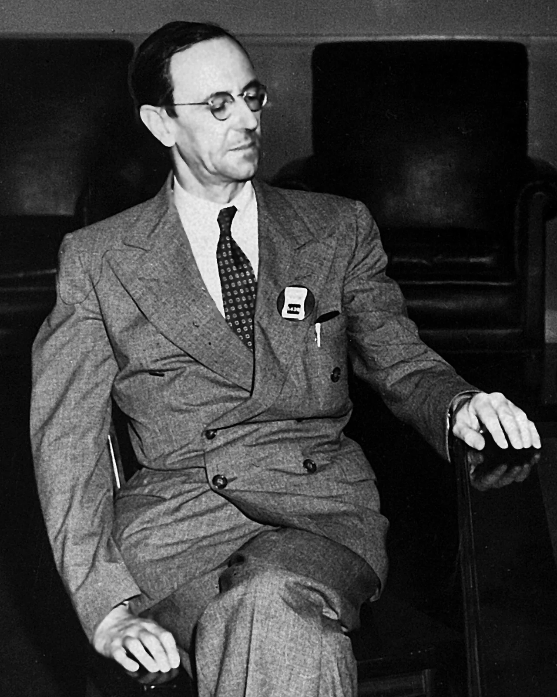
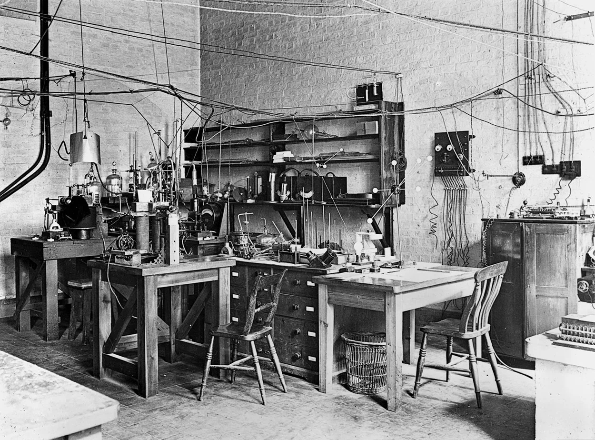
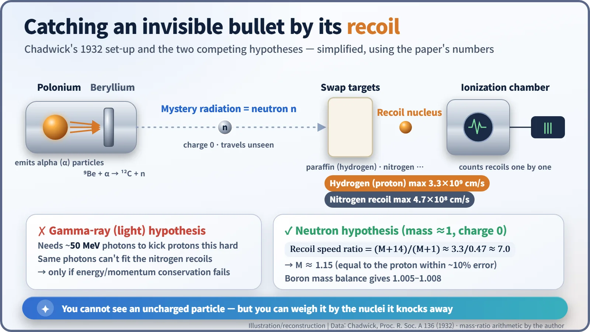
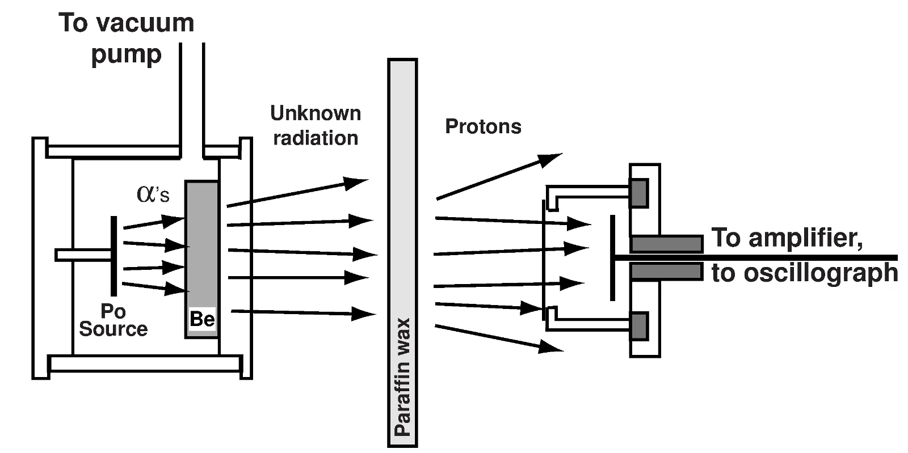
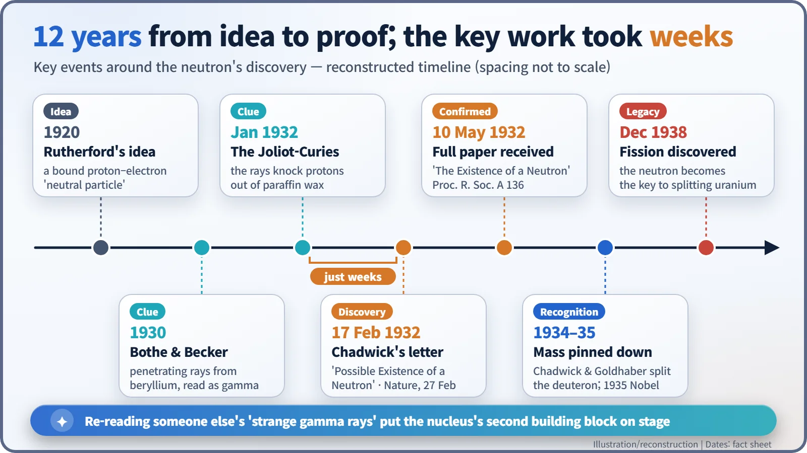

Nuclear History · 045
The Letter That Only Said "Possible" — James Chadwick Discovers the Neutron (1932)
A cautious one-page letter to Nature turned a misread 'gamma ray' into the particle that would later unlock fission and the nuclear reactor.
In February 1932, after a few intense weeks at the Cavendish Laboratory in Cambridge, James Chadwick showed that a mysterious "gamma radiation" from beryllium was really a stream of uncharged particles about as heavy as protons. His cautious letter to Nature, titled "Possible Existence of a Neutron", introduced the particle that would make nuclear fission and nuclear reactors possible.
A very modest title
Few landmark papers have had a more modest title. "Possible Existence of a Neutron" ran to barely a page in Nature on 27 February 1932 (vol. 129, p. 312). At the bottom was a date line: Cavendish Laboratory, Cambridge, 17 February. Its author, the 40-year-old English physicist James Chadwick (1891–1974), did not write "I have found". He wrote that the particle might exist. That cautious letter introduced the world to the second building block of the atomic nucleus. [1]

Twelve years hunting a particle with no charge
In the 1920s, physicists assumed the nucleus was made of protons and electrons. The bookkeeping kept going wrong. Treat a nitrogen nucleus as 14 protons plus 7 electrons, and its spin, a basic quantum property, comes out inconsistent with experiment. In 1920 Ernest Rutherford suggested that the nucleus might hold a neutral particle, a proton and an electron bound tightly together. His colleague Chadwick spent more than a decade looking for it. [3]
The decisive clue came from elsewhere. In 1930 Walther Bothe and Herbert Becker in Germany bombarded beryllium with alpha particles (helium nuclei) from polonium and found a radiation that passed easily even through lead. Electric fields did not bend it, so everyone took it for gamma rays, which are very energetic light. In January 1932, Irène and Frédéric Joliot-Curie in Paris reported something stranger: this radiation knocked fast protons out of paraffin wax, a hydrogen-rich material.

Light that knocks out protons?
Chadwick was not convinced. A photon has no mass. To shove a proton that hard, it would need about 50 million electron volts (50 MeV), far more than any known gamma ray. It is like expecting a ping-pong ball to send a bowling ball flying. In Rome, according to a story often told by his colleagues, the young theorist Ettore Majorana remarked: "What fools, they have discovered the neutral proton and they do not recognize it." [3]
Chadwick went straight to work. He put polonium and beryllium together in a small cylinder and aimed the radiation at different targets: paraffin, nitrogen and other materials. Then he counted the nuclei it knocked out, one by one, with a small ionization chamber, a detector that gives an electrical pulse whenever a charged particle passes through. His colleague Norman Feather helped with the nitrogen recoil tracks. Sources disagree on exactly how long the work took, from about ten days to two or three weeks, but all agree it was a short, intense burst. [4]

Thinking in billiard balls
The numbers told the story. Hydrogen nuclei (protons) shot out at up to about 3.3 × 10⁹ cm per second; nitrogen nuclei at up to about 4.7 × 10⁸ cm per second. No single kind of gamma ray could explain both. If the culprit was a particle about as heavy as a proton but with no charge, colliding like a billiard ball, both results fell neatly into place. Put the ratio of the two speeds into the collision formula and the mystery particle comes out at about 1.15 proton masses, the same as a proton within the roughly 10 per cent uncertainty. The mystery radiation was neutrons, released when beryllium absorbs an alpha particle and becomes carbon. [2]
The letter's conclusion was careful but firm. Up to that point, Chadwick wrote, "all the evidence is in favour of the neutron, while the quantum hypothesis can only be upheld if the conservation of energy and momentum is relinquished at some point." The full paper, received by the Royal Society on 10 May 1932, dropped the hedge from its title: "The Existence of a Neutron". Using a reaction with boron, it also put the neutron's mass between 1.005 and 1.008. [2] [3]
Interestingly, Chadwick himself first leaned towards seeing the neutron as a proton–electron composite. "It is, of course, possible to suppose that the neutron may be an elementary particle," he wrote, adding that this view "has little to recommend it at present". In 1934–35, Chadwick and Maurice Goldhaber used gamma rays to split the deuteron (the heavy-hydrogen nucleus) and showed that the neutron is slightly heavier than the proton. The modern picture, a nucleus of protons and neutrons, was settling into place. [3]

The star of the reactor walks on stage
Chadwick received the 1935 Nobel Prize in Physics, unshared, "for the discovery of the neutron". The same year the Joliot-Curies won the Nobel Prize in Chemistry for artificial radioactivity. Frédéric Joliot later reflected that Rutherford's idea had lived on in the atmosphere of the Cavendish, so it was "natural – and just" that the discovery was made there (quoted here in English translation). This is less the tale of one lone genius than of several laboratories' results, finally read the right way. [6] [3]
Because it carries no electric charge, a neutron is not pushed away by the nucleus and can slip right inside. It quickly became the ideal bullet for nuclear reactions. Two years later Enrico Fermi was bombarding element after element with neutrons, and in December 1938 neutrons were found to split uranium in two: nuclear fission. The chain reactions inside every nuclear reactor today are carried by this same particle. Less than seven years after a letter that only said "possible", the door to the nuclear age was open. [4] [5]
